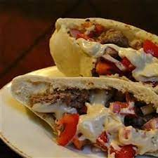

Home
Lebanese Donair

Description
This is a Lebanese donair recipe, a traditional dish made with seasoned meat and tahini sauce that's enjoyed in many parts of the Middle East.
Ingredients
- 3 1/4 pounds boneless top round steak, sliced very thin
- 1/2 cup red wine vinegar
- 1/2 cup olive oil
- 1/4 cup fresh lemon juice
Steps
- Place the sliced beef into a flat, ovenproof dish. Stir the red wine vinegar, 1/2 cup olive oil, lemon juice, allspice, cinnamon, cardamom, black pepper, salt, tomatoes and garlic together in a bowl until well blended. Pour over the beef, turning slices to coat evenly. Cover, and refrigerate 4 hours.
- Preheat oven to 425 degrees F (220 degrees C).